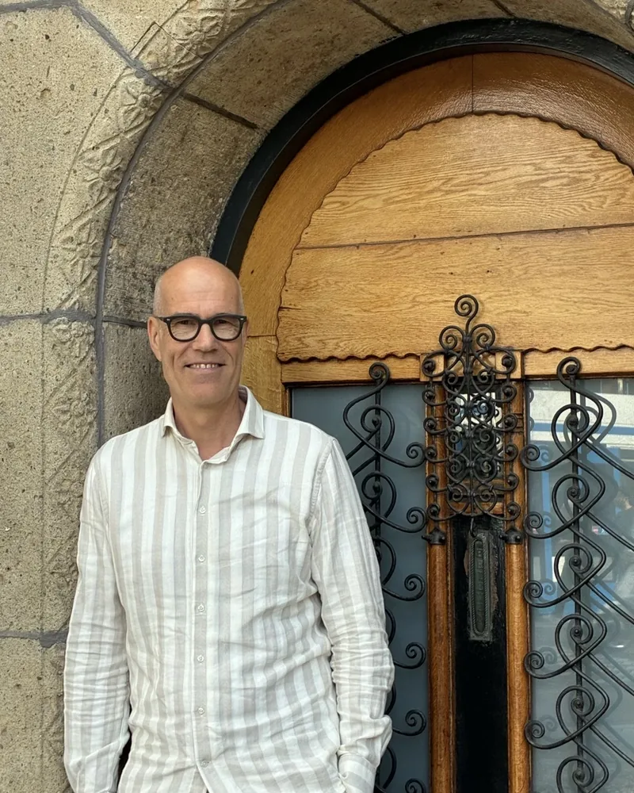

Over mij
Ik ben Walter Montenarie. In 2010 kreeg ik een burn-out. Sindsdien help ik anderen om gezonder en met meer plezier te werken.
Waarom dit werk
Tijdens mijn herstel ontdekte ik hoe belangrijk de balans is tussen mentale veerkracht en fysieke gezondheid. Ik liet me opleiden tot HCP-gezondheidscoach. Daardoor kan ik wat de wetenschap weet over leefstijl vertalen naar wat in de praktijk werkt.
Mijn ervaring
Ik heb ruim 30 jaar ervaring in gezondheidscoaching, commercieel management, organisatieontwikkeling en strategie.
De afgelopen zes jaar werkte ik bij het Health Coach Program als zakelijk directeur, gezondheidscoach en senior strategisch adviseur. Daar zette ik gezondheidsprogramma's op die op onderzoek zijn gebaseerd. Ik voerde ze in bij grote bedrijven en overheidsorganisaties.
Daarvoor was ik commercieel eindverantwoordelijk bij onder meer EDIA en Noordhoff en gaf ik leiding bij Sdu en Springer Nature. Zo leerde ik verschillende soorten organisaties van binnenuit kennen.
Hoe ik werk
Ik spreek de taal van directies en ken de praktijk van de werkvloer. Ik begin bij de vraag wat het je moet opleveren. Daarna kijk ik wat er al gebeurt, wat ontbreekt en wat haalbaar is. Ik werk vanuit Den Haag voor Nederlandse en internationale organisaties in heel Nederland.
Wat anderen zeggen
Walter is een heel toegankelijke en open persoon, met wie het prettig samenwerken en sparren is. Hij combineert veel kennis en ervaring op het gebied van vitaliteit en duurzame inzetbaarheid met een sterke commerciële blik en het vermogen om kansen te zien en mensen met elkaar te verbinden.
Wat ik bijzonder aan Walter waardeer, is dat hij niet alleen ideeën heeft, maar ook graag dingen in beweging zet. Hij denkt mee, neemt initiatief en zoekt actief naar mogelijkheden om tot concrete samenwerking te komen.